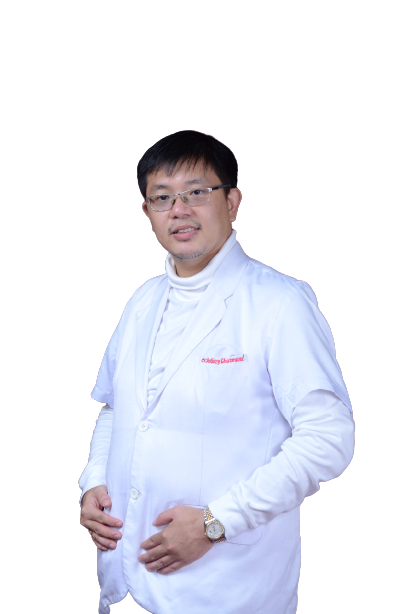
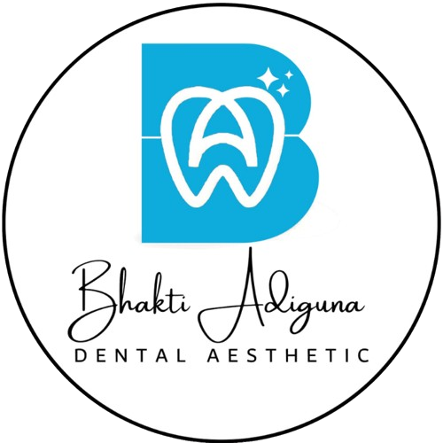
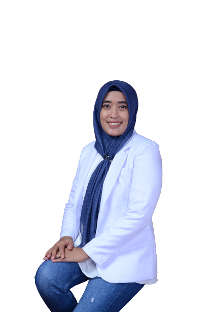
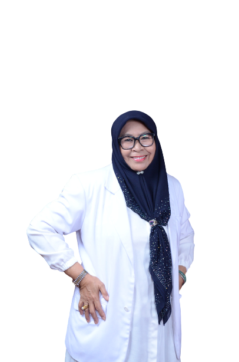
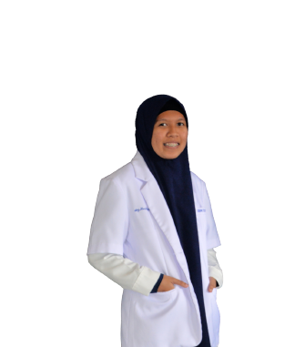

drg.Antony Chusmond, S.Kg
Dokter Gigi

Bhakti Adiguna Dental AestheticPelayanan terbaik untuk kesehatan dan estetika gigi Anda.

Bhakti Adiguna Dental Aesthetic hadir dengan fasilitas modern, tenaga medis profesional, dan pelayanan terbaik untuk membantu menjaga kesehatan serta estetika gigi Anda.
Kami melayani berbagai tindakan seperti scaling, tambal gigi, bleaching, veneer, orthodonti, dan konsultasi kesehatan gigi.
Klinik Gigi Bhakti Adiguna Dental Aesthetic merupakan Klinik Gigi yang bernaung dibawah CV. Abelyn Cahaya Adiguna yang dipimpin oleh drg. Antony. Dalam memberikan pelayanan terhadap pasien, Klinik Gigi Bhakti Adiguna Dental Aesthetic beroperasi setiap hari senin sampai hari sabtu dari jam 09.00 – 21.00 WITA, dengan tim dokter yang selalu siap untuk melayani pasien dan dibantu oleh perawat gigi dan tenaga administrasi.
Tagline Klinik Gigi Bhakti Adiguna Dental Aesthetic “From Heart to Your Perfect Smile” kami wujudkan dalam bentuk komitmen untuk senantiasa memberikan pelayanan serta perawatan dental terbaik bagi setiap pasien melalui tim Dokter Gigi Umum dan Spesialis yang expert dan berpengalaman, peralatan dan perlengkapan medis yang modern, serta para staff yang terlatih dan berdedikasi.
Perawatan lengkap dengan teknologi modern.
Membersihkan karang gigi untuk menjaga kesehatan mulut dan gusi.
Membantu membuat gigi tampak lebih putih dan cerah.
Perawatan gigi berlubang dengan hasil estetik dan nyaman.
Solusi estetika untuk senyum lebih rapi dan percaya diri.
Mempertahankan gigi yang terinfeksi atau rusak parah agar tidak perlu dicabut.
Menghilangkan sumber rasa sakit dan mencegah penyebaran infeksi ke jaringan atau gigi lain di sekitarnya.
Mengembalikan fungsi mengunyah, memperbaiki estetika wajah, serta melindungi gigi dan gusi yang masih tersisa dari pergeseran.
Menggantikan gigi yang hilang hingga ke akarnya secara permanent.
Tim dokter profesional yang siap memberikan pelayanan terbaik untuk kesehatan dan estetika gigi Anda.

Dokter Gigi

Dokter Spesialis Konservasi Gigi

Dokter Gigi

Dokter Gigi
Dokter Spesialis Bedah Mulut & Maksilofasial
Kenali suasana dan informasi visual Klinik Bhakti Adiguna Dental Aesthetic.
Foto galeri menggunakan gambar lokal yang juga tersedia pada carousel utama. Anda dapat menggantinya dengan foto asli klinik kapan saja.
📍 Jl. Bhakti Adiguna, Caile, Kec. Ujung Bulu, Kabupaten Bulukumba
📞 085340696670
📸 Instagram: @bhaktiadiguna_dental_aesthetic